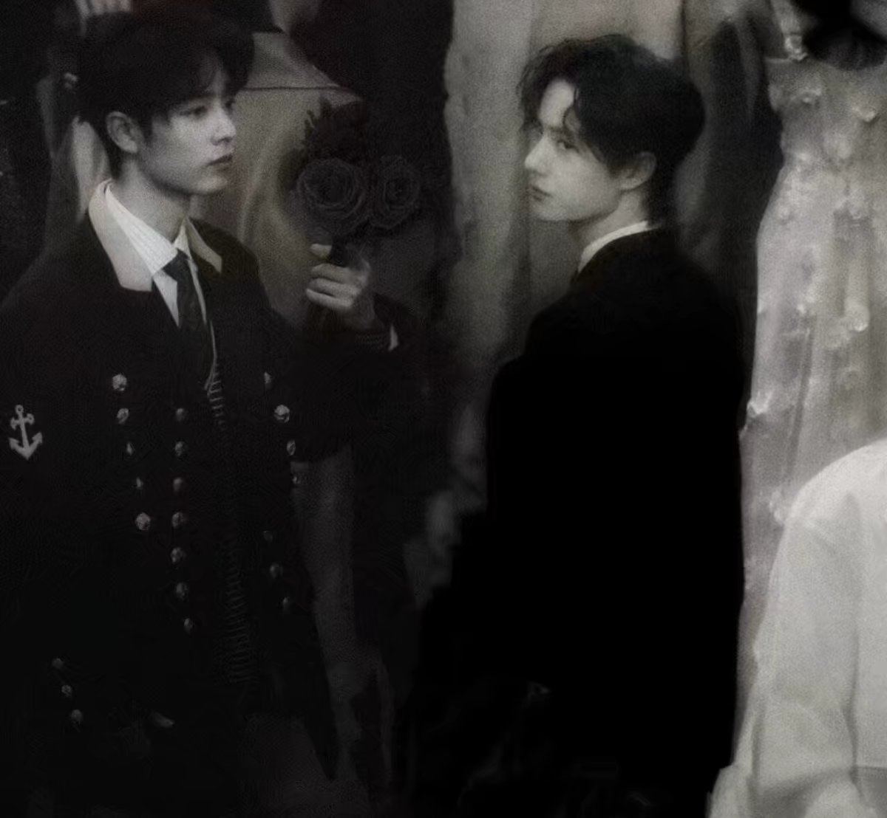

“博君一肖”是中国娱乐圈最受欢迎的CP之一，指的是演员肖战与王一博的CP。无论是屏幕上的情侣形象，还是现实中的互动，他们都为粉丝呈现了极具魅力的“双男主”组合。
博君一肖这一CP的名字来源于肖战和王一博的名字“博”（王一博）和“肖”（肖战）。这一对CP最初源于他们在《陈情令》中的深厚合作，而后在公开活动中的互动进一步加深了粉丝们的喜爱与追捧。
肖战与王一博的经典合影：
无论是在剧中的深情对手戏，还是在综艺节目中的默契互动，肖战与王一博的合作总是让人感动。粉丝们常用“心有灵犀”来形容两人之间的默契，甚至认为他们的关系超越了普通的同伴。
博君一肖不仅仅是两位艺人之间的关系展示，它已成为一种文化现象。通过他们的合作，博君一肖激发了大量的粉丝创作，包括同人文、艺术作品以及线下见面会等，形成了独特的粉丝经济和文化。
博君一肖精彩视频：